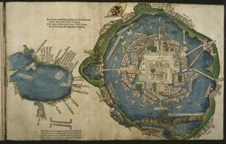
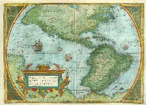
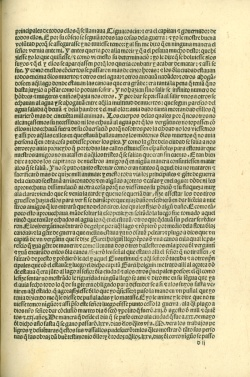
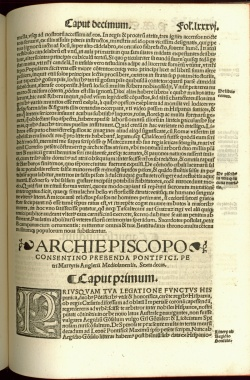
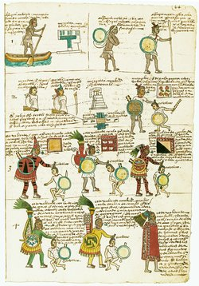
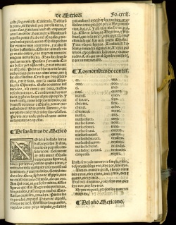
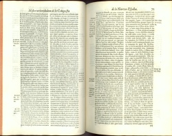
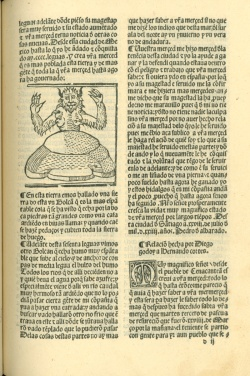

Hernán Cortés y sus compañeros llegaron la isla de San Juan de Ulúa en la costa de la provincia azteca de Cuetlaxtlan (Veracruz) el 20 de abril de 1519. Poco después, los españoles empezaron a intercambiar mensajes con el gobernante Motecuhzoma Xocoyotzin en México-Tenochtitlan. De sus intérpretes, Jerónimo de Aguilar y Malintzin Tenepal, Cortés consiguió valiosa información de la región, la que utilizó para establecer alianzas políticas claves que le permitieron alcanzar sus metas. De este modo, el lenguaje y conocimiento se hicieron esenciales para los esfuerzos españoles de construir un imperio en las tierras dominadas por los aztecas.
Informes, mapas, y muestras de todo tipo fueron enviados sin demora a España junto con el tesoro acumulado por los conquistadores. Para los españoles, el poder de definir a los indígenas—los nuevos vasallos de la corona—equivalía al derecho a gobernarlos. Los nahuas rápidamente comprendieron que su historia e identidad en sí mismos eran un valioso botín para los españoles.
Newberry Library: Ayer 655.51 .C8 1524d
En sus cartas al emperador Habsburgo Carlos V, rey de España, el conquistador español Hernán Cortés exaltó sus hazañas y describió la población y las maravillas de los nuevos territorios que había conquistado. Este mapa, publicado con las cartas de Cortés, les proporcionó a los europeos la primera imagen de la capital azteca, Tenochtitlan.
Aunque estaba en ruinas en el momento de la publicación del mapa, la ciudad insular, con el distrito ceremonial azteca al centro, parece serena y ordenada bajo el águila bicéfala y la corona de la bandera imperial de la casa de Habsburgo. El mapa más pequeño a la izquierda representa el Golfo de México.
Newberry Library: Fitzgerald Map 2F G3290 1570.07 1580
Publicado por primera vez en 1570, el mapa de América de Ortelius presenta una imagen cristianizada de México (Hispania Nova o Nueva España) y sus ciudades y pueblos, muchos de ellos representados por torres y agujas de iglesias. México-Tenuchtitlan (Tenochtitlan) está localizado en el Lago Texcoco. El holandés Ortelius le dedicó sus mapas a Felipe II, rey de España y los Países Bajos.
Newberry Library: Ayer 655.51 .C8 1523
Al describir las últimas etapas de la resistencia indígena en Tenochtitlan, Cortés enfrentó la tragedia humana de la conquista. El conquistador nunca pudo predecir o llegar a comprender la voluntad de los aztecas para soportar miserias, hambre y muertes masivas antes que rendirse. Ni las palabras ni la fuerza le sirvieron para persuadir a Cuauhtémoc, el último gobernante azteca, de someterse a la autoridad española. Cuán diferente el mundo indígena era respecto al suyo es una pregunta que estaba fuera de su alcance.
& yo le mostre buena voluntad porque se assegurasse y no tuviesse temor: y al fin me dixo que en ninguna manera el señor vernia ante mi. Y antes queria por alla morir. . . . [L]os de la ciudad estavan todos encima de los muertos: & otros en el agua: & otros andavan nadando: & otros ahogandose en aquel lago donde estavan las canoas que era grande: era tanta la pena que tenian que no basta juicio a pensar como lo podian sofrir. Y no hazian sino salirse infinito numero de hombres & mugeres & niños hazia nosotros. Y por darse priessa al salir unos a otros se echavan al agua y se ahogavan entre aquella multitud de muertos: que segun parescio del agua salada que bevian & de la hambre & el mal olor: havia dado tanta mortandad en ellos que murieron mas de cincuenta mill animas. Los cuerpos de las quales porque nosotros no alcançassemos su necessidad ni los echavan al agua, porque los vergantines no topassen con ellos ni los echavan fuera de su conversacion porque nosotros por la cibdad no los viessemos y assi por aquellas calles en que estavan hallavamos los montones de los muertos que no havia persona que en otra cosa pudiesse poner los pies.
18 de febrero de 1519 Hernán Cortés parte de Cuba hacia Yucatán.
20 de abril de 1519 Los conquistadores llegan a San Juan de Ulúa.
Junio de 1519 Los conquistadores fundaron el pueblo de Villa Rica de la Vera Cruz.
8 de agosto de 1519 Cortés parte hacia Tenochtitlan.
18 de septiembre de 1519 Los conquistadores, después de hacer una violenta guerra en la provincia tlascalteca, entran a la ciudad de Tlaxcala para establecer una alianza con los líderes indígenas Maxixcatzin y Xicotencatl.
Octubre de 1519 Los conquistadores masacran más de cien nobles cholultecas desarmados en el patio del templo de Quetzalcoatl.
Noviembre de 1519 Cortés se encuentra con Motecuhzoma Xocoyotzin cerca de la entrada de Tenochtitlan, tomándolo prisionero poco después.
Mayo de 1520 Pedro de Alvarado lidera la masacre de los nobles indígenas en Tenochtitlan durante la fiesta de Toxcatl, causando un levantamiento masivo.
1 de julio de 1520 Los conquistadores huyen de Tenochtitlan bajo intenso combate.
Mayo de 1521 Cortés inicia el ataque contra Tenochtitlan, cercando la ciudad con la ayuda de miles de tropas indígenas aliadas.
Agosto de 1521 Después de demoler la ciudad, los españoles finalmente capturaron a Cuauhtémoc poniendo fin a la resistencia azteca desde dentro de la cuidad.
Newberry Library: Vault Ayer 111 .A5 1530
En 1522, el humanista italiano Pedro Mártir de Anglería invitó a Juan de Ribera, el procurador de Cortés que venía desde México, a una reunión en su casa. Encontrándose con un grupo de hombres políticamente vinculados al Vaticano, Venecia, y Milán, Ribera respondió preguntas acerca de la civilización indígena y les mostró joyas, artesanías, ropa, mapas y otros manuscritos pictográficos. Un joven nahua les demostró costumbres indígenas representando un combate militar, danzas cortesanas y el comportamiento bajo estado de embriaguez.
En 1530, Mártir publicó De Orbe Nouo Decades. El texto basado en el reporte de Ribera, la observación de artículos indígenas y la actuación del joven nahua, fue la primera representación erudita de la civilización azteca presentada al público europeo.
Entre los mapas de aquellas tierras hemos examinado uno que tiene de largo treinta pies, de ancho poco menos, tejido de algodón blanco, en el cual estaba escrita con extensión toda la llanura con las provincias, tanto las amigas de Motecuhzoma como las enemigas. Están asimismo vastos montes que por todos lados rodean el llano, y están figuradas las costas meridionales, de cuyos habitantes dicen haber oído que están cerca las islas en donde dijimos arriba que se crían los aromas y oro y perlas en abundancia. . . .
En aquellas montañas dice [Ribera], según la relación de los naturales, que hay hombres salvajes, greñudos como los osos peludos de nuestras montañas, y que pasan con los frutos espontáneos de la naturaleza y con la caza. Después del mapa más grande, vimos otro poco menor, que no nos excitaba menos interés. Comprendía la misma ciudad de Tenochtitlán, con sus templos y puentes y lagunas, pintado por mano de los indígenas. Después de esto, estando nosotros sentados en un terrado descubierto, hizo salir de mi dormitorio, con sus aprestos guerreros, a un muchacho indígena que él se trajo de criado. (Traducción de Joaquín Torres Ascensio y Julio Matínez Mesanza. En Décadas. Madrid: Polifemo, 1989, 381-383)
Newberry Library: Ayer folio F1219.56.C625 C64 1992
|  |
Los libros indígenas pictográficos fueron una fuente vital para los colonizadores españoles que trataban de entender una cultura desconocida. Producido por el Virrey Antonio de Mendoza, el Códice Mendoza es una recopilación pictográfica que incluye la historia imperial de Tenochtitlan, registros de tributos y una descripción de la vida indígena desde la niñez hasta la vejez.
Las dos secciones superiores en la página expuesta aquí presentan el entrenamiento de un sacerdote (que incluía el trabajo en obras públicas y reparaciones de templos y puentes). Las imágenes restantes muestran guerreros, ilustrando la importancia de la captura de enemigos en la guerra para la adquisición de status social.
Las dos secciones superiores en la página expuesta aquí presentan el entrenamiento de un sacerdote (que incluía el trabajo en obras públicas y reparaciones de templos y puentes). Las imágenes restantes muestran guerreros, ilustrando la importancia de la captura de enemigos en la guerra para la adquisición de status social.
Newberry Library: Vault Ayer 108 .G6 1553 vol. 2
Una de las fuentes más importantes de la conquista española es la Historia general de las Indias de Francisco López de Gómara, en cuya segunda sección se incluye un cuadro detallado de la cultura y sociedad indígena en México. Gómara trabajó con muchas fuentes desde relatos previos de la conquista hasta estudios detallados de la religión indígena realizados por misioneros inmersos entre los indígenas. Como la mayoría de sus contemporáneos, Gómara tenía dificultad para entender la magnitud del conocimiento indígena. Las diversas maneras de transmitir este conocimiento eran igualmente opacas para él.
Newberry Library: Vault Ayer 655.51 .D5 1632
Mucho tiempo después de la conquista, los conquistadores continuaban afectados por sus primeras impresiones de Tenochtitlan. Al describir el panorama de la ciudad, su imagen evocaba admiración, miedo, y deseo de controlar lo desconocido.
Ocupado en sus demandas de mercedes y privilegios, Bernal Díaz recordaba la imponente imagen de la ciudad desde el Templo Mayor para justificar la violación de la soberanía indígena llevada a cabo por los conquistadores. Bernal describe a Motecuhzoma y Cortés tomados de la mano mientras examinan el paisaje ante sus ojos.
Newberry Library: Ayer F *655.51 .C8 1526
Desde un comienzo, los españoles identificaron a los dioses indígenas con el diablo y usaron este concepto para convencer a la población indígena de abandonar sus prácticas religiosas tradicionales. Los propios nahuas llegaron a adoptar la noción europea del diablo e incluso la emplearon ingeniosamente para rechazar a la nueva religión.
La imagen expuesta es un grabado en madera del diablo que se incluyó en una edición de la Cuarta relación de Hernán Cortés en una sección en la que Pedro de Alvarado narra su reciente invasión de Guatemala.